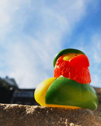

Corinne Brammer's Portfolio for AENG 110 class |
||
| Home Bookmark Project Photo Project Video Project | ||
|
The photo Project objective was to learn how to use and navigate Adobe Photoshop, while also learning some basic photography rules. We began the project by collecting a variety of indoor and outdoor photos. After collecting all of the photos we selected 4 photos to begin editing. My photos mainly focused on rubber ducks but I also took a photo of my dog Nessie. I did a lot of editing with the clone stamp tool, as there were stray funny marks or in very dark areas. We also learned how to use the curves tool to make adjustments to the lighting in a photo. We learned how to use a good amount of the editing software in Photoshop. After we finished editing our photos we created an InDesign document with the details of all the editing we had done to each photo. |
Home Bookmark Project Photo Project Video Project | |
|  | ||